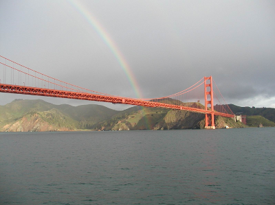

The Environmental Fluid Mechanics and Hydrology group at UC Berkeley uses numerical, observational, and theoretical tools to study the movement of water and air in the natural environment. Research interests include the coastal ocean and estuaries, the atmospheric boundary layer, surface and subsurface hydrology, water-ecosystem interactions, land-atmosphere interactions, numerical methods, turbulence, contaminant transport, groundwater flow, biological fluid mechanics, water resource sustainability, and the intersections of these and many other topics. These research areas are connected by their fundamental dependence on of fluid flows and dynamics.
|  |